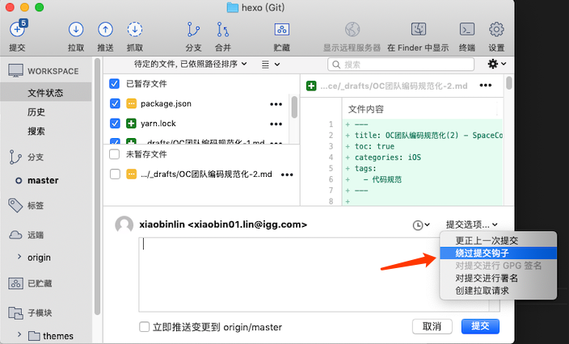

SpaceCommander 提供了一些工具，用于统一 OC 代码风格。这里是原作者的仓库地址，可以看到已经有两三年没有更新了。要接入到开发流程中，当然需要一些修修补补的操作。
SpaceCommander 格式化代码的核心是命令行 clang-format 工具，原作者编写了一些脚本程序，基于 git hook，拦截 git 提交代码的操作，插入编码风格检查流程，只有符合风格规范的代码才能完成提交操作。
注意：SpaceCommander 是基于 git hook，项目需要使用 git 管理源码，如果是 svn 项目，请参考 git-svn 工具，在本地使用 git 管理源码。
环境配置
首先迁出 SpaceCommander。
git clone https://github.com/CodingPub/spacecommander |
配置命令行别名，关键字 alias，以 iTerm 为例，修改文件 ~/.bash_profile，在尾部插入：
# spacecommander |
在控制台，进入项目根目录执行ocformatsetup，之后可以看到项目目录下的 .git/hooks/pre-commit 文件注入了脚本执行语句。
在项目根目录执行 ocformatall 命令，愉快的玩耍吧。
ocformatsetup命令还在项目根目录生成了一个.clang-format文件，执行ls -a可以看到，它只是一个软连接文件，如果保持软连接，不要将它上传到 git 仓库，需要添加到 .gitignore，建议是不上传，所有项目使用同一份配置。当然，这可以根据实际情况进行调整。
常用命令
- ocformatsetup: 初始化项目配置
- ocformat：最常用的命令，格式化 git 暂存的文件，也就是即将提交的文件，因为格式化整个项目，需要几分钟时间，因此提交前只格式化当前修改文件是有必要的。
- ocformat -s: 格式化暂存文件，之后暂存格式化后的文件，初期不建议使用，格式化后要观察一下格式化的结果，保证编译正常再提交。
- ocformatfile：格式化指定文件，将文件路径作为参数传递即可。
- ocformatall：格式化所有文件，项目第一次格式化时使用，大概需要执行2次，才能完成所有格式化操作。
升级 clang-format
笔者仓库内置了 clang-format-8，原作者内置的 clang-format-3.8 版本年代已经不可考，当前最新版本是 9，通过 brew 安装的版本是 8，还算够用。可以在这里查看最新版本的 clang。如果要更新 clang-format 版本，只需要将最新的 clang-format 可执行文件放到SpaceCommander/bin目录下，再修改format-objc-file-dry-run.sh和format-objc-file.sh两个脚本文件引用的 clang-format 路径即可，如：
"$DIR"/bin/clang-format-8.0.0 -i -style=file "$1" ; |
这里需要注意，不同版本的 clang-format 配置属性不能相互兼容，因此升级后，需要重新导出一份默认的 .clang-fomat 配置
clang-format -style=llvm -dump-config > .clang-format |
再根据项目需要，定制相关配置，最后替换掉
SpaceCommander/.clang-format |
.clang-format 样式定制
读者可以根据实际需要，自行定制代码风格，这是笔者参考团队编码规范，进行的配置调整，同时加上了一些简单的备注，具体的配置属性请参考官方 clang-format-8 样式声明，
自定义扩展
再好的程序，也有不够用的时候，这样程序员才不会失业呀。
SpaceCommander 通过编写 Python 脚本进行格式化操作扩展。原作者封装的脚本都继承自 AbstractCustomFormatter，每个调整操作都需要读写一次文件，笔者做了优化调整，将自定义操作整合到 FormatAfterClangFormatter.py 和 PrepareFormatter.py 两个脚本中，格式化 3000+ 个项目文件所用的时长，从 12min 降到了 4 min。
Time is money.
因原作者使用的 clang-format 版本较低，更新后原有的自定义扩展也被笔者去除了，再补上项目组需要的即可。同理，如果读者再次升级了 clang-format 工具，也需要酌情增减自定义扩展中的脚本。
目前自定义扩展主要做了以下工作：
- 优化 @{} 内部的换行，格式化后的代码更加紧凑
- 优化类别定义时括号前多出的空格
- 两个方法之间插入空行
忽略格式化
总有代码不服管教，能怎么办呢，只能放过。
忽略多个文件
在项目根目录新建 .formatting-directory-ignore 文件，列出不参与格式化的目录名或文件名，可包含多个配置，配置不支持正则，可只列出文件名的一部分，进行模糊匹配，如：
.framework |
注意：Pods 是被默认屏蔽的，这里只是作为 demo.
忽略单个文件
在文件的第一行加上 #pragma Formatter Exempt or // MARK: Formatter Exempt 就可以阻止该文件被格式化。
忽略代码段
在指定代码段的前后加上 // clang-format off 和 // clang-format on 可以阻止该段代码被格式化。注意这个功能对于自定义扩展的格式化操作无效。
强制提交
工具是程序员编写的，偶尔出点 bug 也是能理解的，在实际开发中，如果代码格式化出现异常，又需要马上提交代码，可以绕过提交钩子提交代码。
